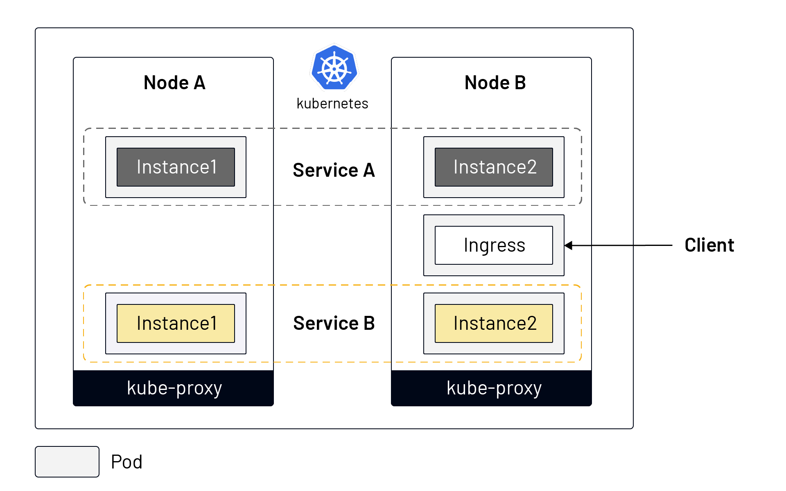
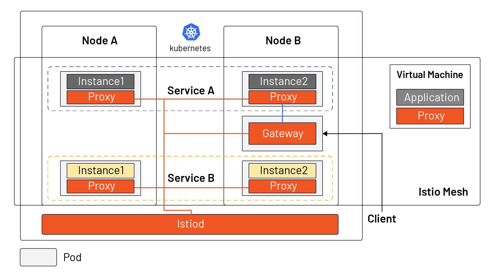

Istio, the most popular service mesh implementation, was developed on top of Kubernetes and has a different niche in the cloud native application ecosystem than Kubernetes. Rather than introduce you directly to what Istio has to offer, this article will explain how Istio came about and what it is in relation to Kubernetes.
To explain what Istio is, it’s also important to understand the context in which Istio came into being — i.e., why is there an Istio?
Microservices are a technical solution to an organizational problem. And Kubernetes/Istio are a technical solution to deal with the issues created by moving to microservices. As a deliverable for microservices, containers solve the problem of environmental consistency and allow for more granularity in limiting application resources. They are widely used as a vehicle for microservices.
Google open-sourced Kubernetes in 2014, which grew exponentially over the next few years. It became a container scheduling tool to solve the deployment and scheduling problems of distributed applications — allowing you to treat many computers as though they were one computer. Because the resources of a single machine are limited and Internet applications may have traffic floods at different times (due to rapid expansion of user scale or different user attributes), the elasticity of computing resources needs to be high. A single machine obviously can’t meet the needs of a large-scale application; and conversely, it would be a huge waste for a very small-scale application to occupy the whole host.
In short, Kubernetes defines the final state of the service and enables the system to reach and stay in that state automatically. So how do you manage the traffic on the service after the application has been deployed? Below we will look at how service management is done in Kubernetes and how it has changed in Istio.
The following diagram shows the service model in Kubernetes:

From the above figure we can see that:
Kubernetes is used as a tool for intensive resource management. However, after allocating resources to the application, Kubernetes doesn’t fully solve the problems of how to ensure the robustness and redundancy of the application, how to achieve finer-grained traffic division (not based on the number of instances of the service), how to guarantee the security of the service, or how to manage multiple clusters, etc.
The following diagram shows the service model in Istio, which supports both workloads and virtual machines in Kubernetes.

From the diagram we can see that:
In fact, before Istio one could use SpringCloud, Netflix OSS, and other tools to programmatically manage the traffic in an application, by integrating the SDK in the application. Istio makes traffic management transparent to the application, moving this functionality out of the application and into the platform layer as a cloud native infrastructure.
Istio complements Kubernetes, by enhancing its traffic management, observability and security for cloud native applications. The service mesh open source project — launched in 2017 by Google, IBM and Lyft — has come a long way in three years. A description of Istio’s core features can be found in the Istio documentation.